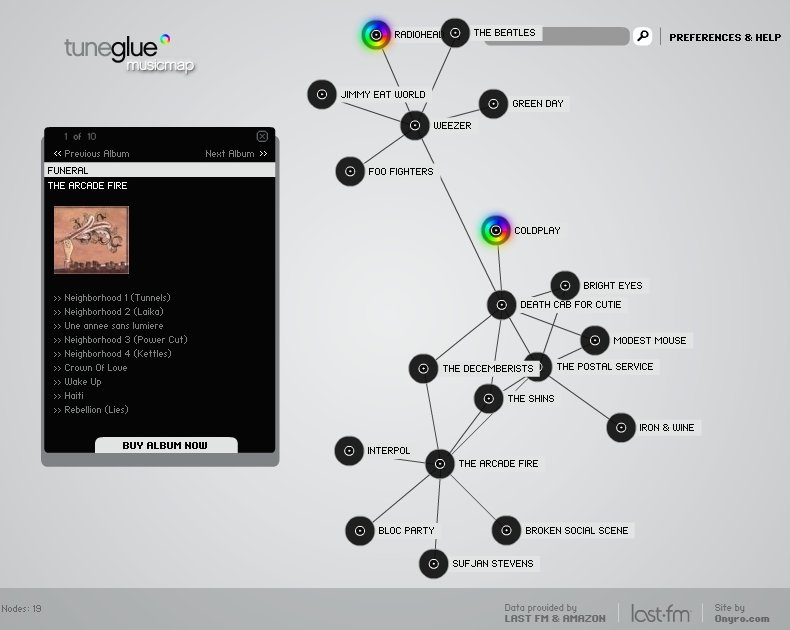
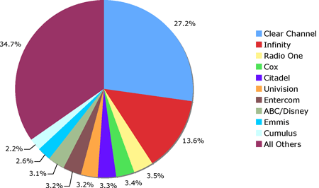
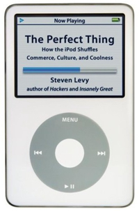

Interesting post in TechCrunch
about a recent gathering where Bill G opined about the future of
DRM. Bill's advice for dealing with DRM: “People
should just buy a cd and rip it. You are legal then.”
Thursday Dec 14, 2006
Wednesday Dec 13, 2006
This press release
describes a partnership between EMI and last.fm in which EMI has
launched ‘tuneglue-audiomap,’ an "extensive online music mapping
mechanism
which utilizes data from Last.fm to make focused and
accurate music recommendations to music fans.". As I write this,
there doesn't seem to be any site beyond a holding page at http://audiomap.tuneglue.net/ so it looks like the press release is a bit premature. So there's nothing to report about the site yet.
Update: Hannes points me to http://clients.onyro.com/tuneglue/ to see tuneglue in action. It appears to be a reworking of MusicMap with some nifty interface improvements and of course incorporating the last.fm similarity data. Here's tuneglue in action:

It's a pretty cool way to browse through the world of music. It is similar to MusicPlasma and Musicovery in
that you have a visual way of exploring similar artists - it would be
nice of tuneglue would let you listen to music like Musicovery does.
It is interesting to see one of the big labels starting to work with last.fm. It sure did take them long enough.
Today the Future of Music Coalition released a report documenting the effects of radio station ownership consolidation on musicians and the public. The report sharply criticizes the trend to radio consolidation stating:
Radio consolidation has no demonstrated benefits for the public. Nor does it have any demonstrated benefits for the working people of the music and media industries, including DJs, programmers—and musicians. The Telecom Act unleashed an unprecedented wave of radio mergers that left a highly consolidated national radio market and extremely consolidated local radio markets. Radio programming from the largest station groups remains focused on just a few formats—many of which overlap with each other, enhancing the homogenization of the airwaves.
A
chart showing the market share for the largest radio networks shows
that the top 4 networks now have 50% marketshare - and the largest
networks are narrowing the range of programming

The executive summary is an interesting read for anyone that is interested in the future of music on broadcast radio.
Check out this recent post in Dave Berlind's TestBed Blog Demo out of Sun’s Labs proves the best tech of all is the one you forget is there that describes the Sun Labs Meeting Suite - a project by the Collaborative Environments team here in Sun Labs. In his blog, Dave is brimming with enthusiasm for this project. He says: ...I'm fairly certain I saw for the first time since I started writing about technology in 1991, a communications technology that makes you forget that the communications taking place are being assisted by technology: and a rocket science-like technology at that. It was a real glimpse into a future where technology is a seamless and transparent part of what we do, rather than something that requires a lot of frustrating knobs and levers to make it do our bidding.
Dave's
right, the Collaborative Environments team has put together a really
compelling system for improving distributed meetings. The folks on
this team are hyper-creative and execute really well - not
only do they put together a good demo - but the systems that they build
are solid - not pieced together with glue and duct tape like many
demos.
Tuesday Dec 12, 2006
This year, I am hoping to find a few books under the Christmas tree. One book I'm looking forward to reading is The Perfect Thing: How the iPod Shuffles Commerce, Culture, and Coolness by Stephen Levy - about the cultural phenomenon of the iPod. I enjoyed listening to Stephen in a recent interview in Get Illuminated podcast.
With the looming deadline for JavaOne talk submissions, I finally got off my duff, stopped procrastinating and submitted my JavaOne talk proposal. Here's the proposal:
Search Inside the Music
Using signal processing, machine learning and
3D visualizations to discover new music
In this talk, we present Search Inside the Music, a
research project in Sun Labs that is exploring new ways
to help people to discover new music even as our music
collections get very large.
As online music collections grow to many millions of
songs, finding a new song that we might like is becoming
very difficult. The Search Inside the Music system can
help us find new music by finding music that *sounds like*
music that we already know and like.
SITM, written entirely in the Java programming language,
uses digital signal processing and machine learning
algorithms to build a music similarity model that
can predict how similar or dissimilar a pair of songs
sound. SITM uses this music similarity model to recommend
music by finding music that sounds similar to music that
you already know and like.
Not only can we use this music similarity model to help
recommend music, we can use the model to generate a more
engaging, immersive interface to our music. SITM uses
the music similarity model to generate a 'music space'
- a 3-dimensional representation of a music collection,
where songs are positioned in this space based upon music
similarity. In this music space, Classical music may be
clustered in one corner trying to stay as far away from
Punk music as possible, while Blues finds a home near, but
separate from Jazz and Rock. This visualization encourages
music exploration. New songs can be auditioned by clicking
on a song in the visualization. Similar sounding songs can
be found by clicking on a song's neighbors. Interesting
playlists can be generated by creating paths through this
music space.
In this talk we discuss some of the problems inherent in
traditional music recommenders, and how a content-based
approach to music recommendation can help improve music
recommendations. We discuss some of the algorithms
involved in building a music similarity model including the
digital signal processing algorithms used for extracting
music features and the machine learning algorithms
for identifying significant patterns in the music. We
discuss some of the algorithms used to generate immersive
interactive visualizations of a music space using the
Java3D API. Finally, we present a demonstration of the
Search Inside the Music system.
Monday Dec 11, 2006
In response to my post about Building the Ultimate Music 2.0
Directory, Luyi Chen pointed me to a recent post in the China
Web2.0 Review blog Comparing Online Music Services
that describes a number of new music startups in China. There are
companies similar to MP3Realm that search for audio, there are
companies similar to last.fm that give you social music
recommandations, there are sites similar to MusicMobs that let you
create and publish playlists. It's very interesting to see all of
this activity around music happening in China.
Sunday Dec 10, 2006
Music 2.0 is really a silly term. If there's such a thing as Music 2.0 it probably occurred many thousands of years ago - when the first vocal group went from singing tutti - to singing in harmony, or perhaps Music 2.0 officially began when a human voice was accompanied for the first time by a tuned drum. Nevertheless, we need to label this new movement in the online music world - and since it seems to be part of the Web 2.0 era, these new online sites are called Music 2.0.
Music 2.0 sites fall into a number of camps:
- music services - places like iTunes and Rhapsody where you can purchase or subscribe to music
- Music discovery - places that help you find music - these fall generally into 3 subcategories:
- Social - wisdom of the crowds sites like last.fm, iLike. Goombah and Qloud
- Content-based - recommendations based on the music content - Pandora, SoundFlavor, MusicIP
- Expert based - Music recommendations from people - music blogs, irateradio.com
- Music experience augmentation - sites to make your music listening experience more enjoyable - this includes playlisting sites like MusicMobs, fiql and Webjay - music dashboards like sleevenotez or Snapp Radio
- Music meta data - add to the data surrounding the music - MusicBrainz, All Music Guide, Gracenote
Keeping track of what is going on in the Music 2.0 world is hard. It seems that every week there's a new Music 2.0 site that does something new and different. There are a few online lists that try to capture all of the Music 2.0 companies. There's Musick in the head's list of Music 2.0 Companies and there's this Music Matrix from Dave's imaginary sound space that is a directory that seems to be mostly about social tagging as applied to music. In order to keep track of this ever expanding space I'd love to build a detailed living directory of all of the music 2.0 companies. Not just a list of the companies, but a detailed directory including:
- Detailed description of the site that describes all of the features
- The reach (estimated number of users)
- Descriptions of web services offered (if any)
- The catalog size (where applicable the number of songs managed)
It
would be great to have such a directory, but building the directory
seems like a huge job - one that I don't think I'd have time to do by
myself. This, however, may be a perfect task for the wikipedia
model - where lots of people contribute the content. I know that there
are a number of folks that are interested in music 2.0 who read this
blog. If you think you would be interested in contributing to a
wikipedia page on Music 2.0 send me an email at Paul.Lamere [at]
sun.com. If enough people offer to help, we'll get started on
building the Ultimate Music 2.0 Directory.
Saturday Dec 09, 2006

MP3Realm is a music search engine. It crawls the web for MP3s, indexes them (it peeks inside the MP3 to pull out the ID3 tags like artist, album, genre, length and bitrate), and makes them available for search. The search itself, is very Google-esque. A simple search form - just in the name of a song, artist or album and MP3Realm will give you results that match - formatted to show what you need to know: the artist, album and title, genre, track length, the source host and probably most important - the link status - letting you know if the link is still a live link to real data.
MP3Realm currently has over 2 million tracks in its index - this sounds like a lot of tracks but many of them are dups or partial tracks - on the other hand, they seem to have lots of popular music - if you are looking for Wonderwall by Oasis - you'll find 20 different copies of the track at MP3Realm in various encodings.
MP3Realm relies on a provision of the DMCA to protect them from lawsuits by copyright holders - MP3Realm will take down any infringing links (they don't host any of the data) if they receive a written document sent by Postal mail.
MP3Realm is pretty neat - it is a quick way to find and download free music on the web. It has a much lower barrier to entry than the Kazaas and the various bittorrent clients. It is essentially Google for Mp3s. DMCA or no, I think MP3Realm's ease of use may be its downfall - the take down notices will come fast and furious once the RIAA machinery gets powered up. You can bet that the RIAA is also getting ready to argue, just as they did in the Grokster case, that MP3Realm is participating in contributory infringement because its does not meet the 'substantiality' requirement. If MP3Realm can show that it is widely used for legitimate, unobjectionable purposes then it will be safe under the Sony safe-harbor principle. However, just a quick look through the MP3Realm shows that the majority of the tracks are under copyright. .
It may take sometime before the RIAA lawyers get on this - in the mean time, MP3Realm will be hooking people up with free digital music. The real victim here will be Apple. The same person who would buy a song from iTunes that they just heard on the radio can now just as easily go to MP3Realm and find the song and download it. It is easier and quicker in MP3Realm than it is in iTunes - and it doesn't cost $.99, and there's no DRM. If MP3Realm is around long enough it may turn a whole new set of people onto the idea that music should be free. Seen on digg.com
Thursday Dec 07, 2006
Goombah is a music discovery tool that helps you find music. Unlike recent music discovery offerings such as iLike and Qloud, Goombah is not a web 2.0, Ajax-laden web 2.0 app. Instead, it is a standalone app that you download, install and run (just like in them there olden days). Goombah uses your iTunes play history so don't bother trying Goombah if you are not an iTunes user. (Linux/Solaris folks are left out to dry - no iTunes, and no Goombah for us). The first time you run Goombah, you get a user/account name and go through the enrolling process. This takes about 20 minutes - during this time Goombah extracts info from your iTunes library, sends it back to the Goombah server where it churns through your collection (not the audio, just the artists, albums, songs and playcounts), builds a model for you so it can match you up with songs and similar users. Once this enrollment process is done, you are ready to use Goombah.

Goombah does 3 things for you:
- It gives you recommendations based upon your listening habits
- It lets you browse the collections of other Goombah users, in particular similar users
- It lets you download free music.
The
recommendations I received from Goombah were really quite good - first
of all, there were very few 'obvious' recommendations. They didn't
recommend The Beatles, or U2 or Radiohead. There were no clunker
recommendations (iLike is still telling me that I should try the The Chimpmunk Song by
The Chimpmunks). And the recommendations that I previewed I actually
liked - I found half-a-dozen songs that sounded really interesting that I
hadn't heard before in just a few minutes with the recommender.
I did try to look at some of the users Goombah suggested would be similar to me. I found that the users didn't seem to be too similar. There's no 'compatibility score' like there is in iLike or last.fm - just an ordered list of similar users. I don't think Goombah has enough users yet to really hook me up with people with similar tastes. The users that I looked at, who were 'similar', didn't really share my music taste - and so I didn't find this feature too interesting. But, as the Goombah user base grows this could be more interesting. I do remember the old-time Napster, browsing another user's collection was my first online music discovery experience - I found lots of interesting music that way.
Goombah also recommends 'new, free music' that you can download. The tracks I tried were all keepers that I will be listening too again (much better than my hype-machine track record).
The Goombah app does have a few warts. It was slow to scroll through large collections of music. While it was downloading music, the Goombah app could do nothing but let watch the download progress bar. Every time I adjusted the 'Adventurous' setting, it insisted on putting up a rather annoying dialog box. The iTunes integration was a bit fragile - I could preview songs via iTunes, but sometimes I had to click two or three times to make it happen. Also, Goobah uses BitTorrent to download data from Goombah central to my computer - I'm not sure if I want to open up extra ports in my firewall to make it easier for Goombah . All of these things (well, perhaps with the exception of the BitTorrent thing) can be expected in a new app. (They are not at version 1.0 yet).
I really like
the simplicity of Goombah. It doesn't try to be a MySpace clone, it
doesn't bother helping me send messages to people, it doesn't do
tagging, album art, artist bios. It is just an app that I can use to get
music recommendations - and they've really done a good job at
giving me good recommendations.
Wednesday Dec 06, 2006
Ringtones are a multi-billion dollar industry - for the phone, so
NetStream is trying to hitch a ride on the ringtone gravy train by
making a doorbell with downloadable ringtones
- yes, the doorbell is an IP device with a network connection - there's
something strangely appealing about pinging my doorbell, but nothing is
appealing about hearing the Macarena when someone is at the door.
Tuesday Dec 05, 2006
The traditional internet come-on is a free iPod - and it looks like
iLike is really giving them away - every day between now and December
24, iLike is giving away an iPod to any active user.
Back in October, I made the 6 hour trek to Montreal to attend the Future of Music Coalition Summit. It was a great event, with many interesting panels, and some very excellent hallway conversations. The hallway conversations have been lost to history, but you can catch the panel sessions (and avoid the tortuous drive) as they have now been put online at the FMC Summit website. --- Via BoingBoing
 Recommendation
is the next 'search'. Companies are trying hard to give people good
recommendations - the web is becoming populated with music
recommenders such as last.fm, myStrands, Qloud, and iLike.
Companies like netflix are offering million dollar prizes
for improved recommendations. If you are building a site with
lots of content - whether it is music, video, blogs or dinner recipes -
you will do well to include a recommender. But where to start? How
does one go about building a recommendation engine?
Recommendation
is the next 'search'. Companies are trying hard to give people good
recommendations - the web is becoming populated with music
recommenders such as last.fm, myStrands, Qloud, and iLike.
Companies like netflix are offering million dollar prizes
for improved recommendations. If you are building a site with
lots of content - whether it is music, video, blogs or dinner recipes -
you will do well to include a recommender. But where to start? How
does one go about building a recommendation engine?
One place to start is Taste - Taste is a collaborative filtering engine for Java developed by Sean Owen. Taste takes as input users' preferences for items and returns estimated preferences for other items. Taste includes a number of CF algorithms including Item-Item recommendations and user-based recommendations.
Taste is very well engineered with a very clean programming model. Here's an example of creating a Slope-One Recommender:
DataModel model = new FileDataModel(new File("data.txt"));
Recommender recommender = new SlopeOneRecommender(model, true);
Using the recommender is as easy as:
List<RecommendedItem> recommendations = recommender.recommend(userID, 10);
There are a number of models and algorithms to try out. There's even a netflix data model so you can get a head start on the Netflix million dollar prize - Sean is competing already as his own team, but he doesn't mind if others use Taste to compete, in fact he encourages it.
Remember, if you don't have a recommendation engine on your site, you don't have Taste. Seen on Geeking With Greg.
Monday Dec 04, 2006
Social music site QLoud has been redone - greatly simplifying the site. You can read about all the changes on the QLoud blog.
They've
also added Flickr images and YouTube videos that are related to
the artist. It is interesting to see Qloud doing this sort of
thing considering the recent post at Net, Blogs and Rock and Roll on Second Generation Websites
and the problems these sites have finding a viable business model when
the terms-of-service such as Flickr's do not allow for commercial
exploitation. At least in this iteration, QLoud seems to be saying
F.U. to the Flickr terms-of-service
- they don't give the photographers credit - they don't have the
required links back to the flickr photo page and they violate licenses
by showing 'all rights reserved' photos. I don't think Qloud is
willfully violating the TOS, I think it is just part of the web 2.0
model of 'get things out the door as fast as you can', and worry
about the legalities later. This model certainly worked for
YouTube - I don't know if it will work for QLoud - it certainly did not
work for the original Napster.
This blog copyright 2010 by plamere